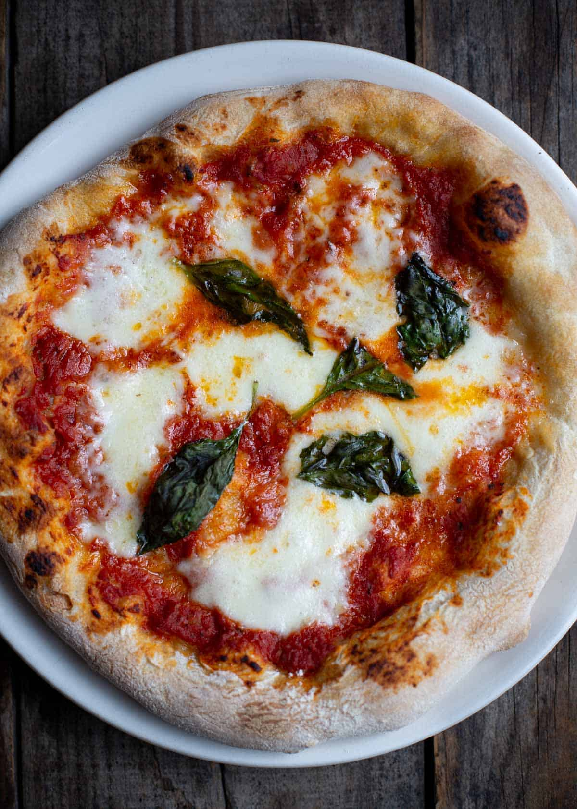

Pizza Margerita

Description
Pizza margherita, as the Italians call it, is a simple pizza
hailing from Naples. When done right, margherita pizza features
a bubbly crust, crushed San Marzano tomato sauce, fresh mozzarella
and basil, a drizzle of olive oil, and a sprinkle of salt. That is all.
Ingredients
- Pizza Dough
- San Marzano Tomatoes
- Fresh Mozzarella Balls
- Fresh Basil
- Olive Oil & Salt
Instructions
- Preheat the oven to 500 degrees Fahrenheit with a
rack in the upper third of the oven. If you’re using
a baking stone or baking steel, place it on the upper rack.
Prepare dough through step 5.
- Place a medium mixing bowl in the sink and pour the canned
tomatoes into the bowl, juices and all. Crush the tomatoes by hand.
Spread about ¾ cup of the tomato sauce evenly over each pizza, leaving
about 1 inch bare around the edges.
- If your mozzarella is packed in water, drain off the water
and gently pat the mozzarella dry on a clean tea towel or
paper towels. If you’re working with large mozzarella balls,
tear them into smaller 1-inch balls. Distribute the mozzarella
over the pizza, concentrating it a bit more in the center of
the pizza, as it will melt toward the edges.
-
Bake pizzas individually on the top rack until the crust is
golden and the cheese is just turning golden, about 10 to 12 minutes
(or significantly less, if you’re using a baking stone/steel—keep an eye on it).
- Top each pizza generously with fresh basil, followed by a light back-and-forth
drizzle of olive oil, a sprinkling of salt, and red pepper flakes, if you wish.
Slice and enjoy. Leftover pizza will keep well in the refrigerator for up to 4 days.